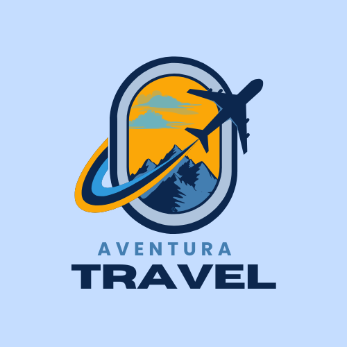

Projectes realitzats
A continuació et mostrem un cas pràctic de com AVS Tech-Management transforma les necessitats dels seus clients en solucions tecnològiques completes.

AventuraTravel
Client: AventuraTravel és una agència de viatges especialitzada en experiències personalitzades i sostenibles per a petits grups.
Objectius del projecte
L’empresa necessitava modernitzar la seva infraestructura informàtica, digitalitzar la seva gestió interna i millorar la seva presència en línia per arribar a més clients potencials.
Solucions implementades
- Instal·lació de cablejat estructurat: vam renovar completament la xarxa física de l’oficina amb connexions segures i ràpides.
- Configuració de servidors Ubuntu i Windows: vam desplegar un entorn mixt amb serveis compartits, còpies de seguretat i accés remot.
- Clients amb arrencada dual: cada ordinador pot funcionar amb Windows per a ús comercial i Ubuntu per a tasques tècniques.
- Desenvolupament web amb WordPress: vam crear una web clara, responsive i optimitzada per a motors de cerca (SEO).
- Muntatge i instal·lació d’equips: vam subministrar i configurar portàtils i PC d’escriptori amb tot el programari necessari.
Resultats obtinguts
Gràcies a la nostra intervenció, AventuraTravel ha experimentat:
- Millora de la productivitat del personal.
- Reducció d'incidències tècniques.
- Major visibilitat online i captació de nous clients.
- Una infraestructura escalable i segura per al seu creixement futur.